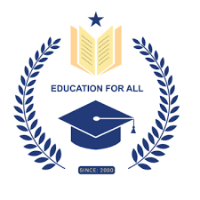

| 
| Our Rankings Methodology and Sponsored Content
Our methodology for evaluating colleges and programs helps eliminate bias from our rankings. We designed a custom methodology to rank programs that prioritizes academic quality, affordability, and return on investment. We also weigh factors such as graduation rate, student debt, and the average salaries of graduates.
College Choice also has some content from our partner schools, which always includes a "Sponsored" or "Featured" label. However, the editorial content on College Choice, including our rankings, is never influenced by our sponsored content.College Choice sets high editorial standards and relies on editors, writers, and subject matter experts to create our content. Our team evaluates data from national databases and degree-granting institutions. By using credible sources, our site provides accurate and relevant information to help college students make decisions about their future.
College Choice also draws on a network of experienced Our methodology for evaluating colleges and programs helps eliminate bias from our rankings. We designed a custom methodology to rank programs that prioritizes academic quality, affordability, and return on investment. We also weigh factors such as graduation rate, student debt, and the average salaries of graduates.
College Choice also has some content from our partner schools, which always includes a "Sponsored" or "Featured" label. However, the editorial content on College Choice, including our rankings, is never influenced by our sponsored content. writers and contributors to craft reliable, reputable content for college students. We incorporate expert interviews to provide insight into career paths, degrees, and the college decision process.
The data sources we use, which include the Bureau of Labor Statistics, the National Center for Education Statistics, and College.Scoreboard, are all recognized for providing accurate information about education and occupations around the United States. |
<\tr>
CAMPUS LIFE
I laying the foundation stone for a college we are in fact imparting strength and durability to a system of public education of a high order, which cannot fail to exercise a most important influence on the rising generation and on generations yet unborn.
It is gratifying to me to reflect that English education struck early root in Travancore, that under favourable auspices, it has attained satisfactory growth and that already, pressing on the material limits provided for its by my venerated predecessor, it now calls for enlarged accommodation.
Such a call, it is superfluous for me to say, will at all times be responded to by the Sate with the utmost alacrity. To the numerous pupils I see assembled on this auspicious occasion I will only say: Pursue your various studies with the utmost devotion and perseverance,; show yourselves worthily of the anxious care bestowed on you by your country for cultivated intelligence and, even over following into other countries, prove yourselves formidable yet friendly rivals to those whom other colleges send abroad. By such a course you will win credit for yourselves and honour for your country.”
The College was affiliated for the B.A. Degree course to the University of Madras, first in Philosophy, in 1884. Mr. Robert Harvey who succeeded Mr. John Ross as Principal was the first Professor of Philosophy. B.A. courses in Mathematics, Chemistry, History, Physics and Sanskrit and Dravidian Languages followed in quick succession. |
Higher education: A sixth form college or college of further education is an educational institution in England, Wales, Northern Ireland, Belize, the Caribbean, Malta, Norway, Brunei, and Southern Africa, among others, where students aged 16 to 19 typically study for advanced school-level qualifications, such as A-levels, BTEC, HND or its equivalent and the International Baccalaureate Diploma, or school-level qualifications such as GCSEs. In Singapore and India, this is known as a junior college. The municipal government of the city of Paris uses the phrase "sixth form college" as the English name for a lycée.[8]
Secondary education
Scotch College, Melbourne, an independent secondary school in Australia
In some national education systems, secondary schools may be called "colleges" or have "college" as part of their title.
In Australia the term "college" is applied to any private or independent (non-government) primary and, especially, secondary school as distinct from a state school. Melbourne Grammar School, Cranbrook School, Sydney and The King's School, Parramatta are considered colleges.
There has also been a recent trend to rename or create government secondary schools as "colleges". In the state of Victoria, some state high schools are referred to as secondary colleges, although the pre-eminent government secondary school for boys in Melbourne is still named Melbourne High School. In Western Australia, South Australia and the Northern Territory, "college" is used in the name of all state high schools built since the late 1990s, and also some older ones. In New South Wales, some high schools, especially multi-campus schools resulting from mergers, are known as "secondary colleges". In Queensland some newer schools which accept primary and high school students are styled state college, but state schools offering only secondary education are called "State High School". In Tasmania and the Australian Capital Territory, "college" refers to the final two years of high school (years 11 and 12), and the institutions which provide this. In this context, "college" is a system independent of the other years of high school. Here, the expression is a shorter version of matriculation college.
In a number of Canadian cities, many government-run secondary schools are called "collegiates" or "collegiate institutes" (C.I.), a complicated form of the word "college" which avoids the usual "post-secondary" connotation. This is because these secondary schools have traditionally focused on academic, rather than vocational, subjects and ability levels (for example, collegiates offered Latin while vocational schools offered technical courses). Some private secondary schools (such as Upper Canada College, Vancouver College) choose to use the word "college" in their names nevertheless.[9] Some secondary schools elsewhere in the country, particularly ones within the separate school system, may also use the word "college" or "collegiate" in their names. A constituent part of a collegiate university, for example King's College, Cambridge, or of a federal university, for example King's College London.
A liberal arts college, an independent institution of higher education focusing on undergraduate education, such as Williams College or Amherst College.
A liberal arts division of a university whose undergraduate program does not otherwise follow a liberal arts model, such as the Yuanpei College at Peking University.
An institute providing specialised training, such as a college of further education, for example Belfast Metropolitan College, a teacher training college, or an art college.
A Catholic higher education institute which includes universities, colleges, and other institutions of higher education privately run by the Catholic Church, typically by religious institutes. Those tied to the Holy See are specifically called pontifical universities.
In the United States, college is sometimes but rarely a synonym for a research university, such as Dartmouth College, one of the eight universities in the Ivy League.
In the United States, the undergraduate college of a university which also confers graduate degrees, such as Yale College, the undergraduate college within Yale University.
Further education
Main article: Sixth form college
A sixth form college or college of further education is an educational institution in England, Wales, Northern Ireland, Belize, the Caribbean, Malta, Norway, Brunei, and Southern Africa, among others, where students aged 16 to 19 typically study for advanced school-level qualifications, such as A-levels, BTEC, HND or its equivalent and the International Baccalaureate Diploma, or school-level qualifications such as GCSEs. In Singapore and India, this is known as a junior college. The municipal government of the city of Paris uses the phrase "sixth form college" as the English name for a lycée. |
<\tr>